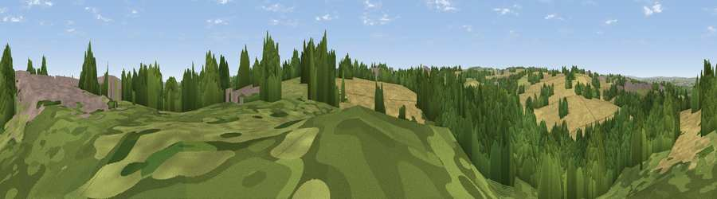

Viewpoint near Netherton
#32093 in England · top 61% of its area beats it · near NethertonThe view, rendered

A 360° render of this exact spot computed from the terrain model, tree cover and land cover — summer colours, afternoon light, calibrated against photographs of famous viewpoints. Real trees, hedges and buildings will differ in detail.
The panorama
Grey silhouette: terrain skyline in each direction (720 bearings, Earth curvature and refraction included). Dashed green: skyline with trees (+15 m) and buildings (+8 m) as obstacles. Blue strip: how far the ground is visible on each bearing.
Where the view opens
Wedge length = distance to the farthest visible ground on that bearing (vegetation-aware). Rings at 10, 25 and 50 km.
What fills the view
47% woodland · 30% cropland · 15% grassland · 9% built-up
Angular shares of the visible panorama (visual magnitude), not map area. Landscape diversity 0.53 (0–1 Shannon).
Key numbers
More beautiful places nearby
The staircase of upgrades: each row has a higher view potential than everything closer. Driving times are estimates from straight-line distance, calibrated against real road routing — check an actual route before setting out.
| Place | Direction | Drive | Score |
|---|---|---|---|
| Viewpoint near Netherton | SSE · 0 km | ~1 min | 44.3 |
| Viewpoint near West Bretton | SE · 1 km | ~4 min | 50.6 |
| Viewpoint near West Bretton | SSE · 2 km | ~5 min | 54.9 |
| Viewpoint near Emley | SW · 4 km | ~10 min | 55.8 |
| Viewpoint near Woolley | SE · 5 km | ~11 min | 66.5 |
| Viewpoint near Grange Moor | W · 5 km | ~11 min | 69.8 |
| Viewpoint near Hoylandswaine | S · 11 km | ~21 min | 71.8 |
| Viewpoint near Hoylandswaine | S · 12 km | ~22 min | 72.7 |
53.63958, -1.58667 · source: screening · position refined by local search. Computed location — check access rights before visiting.